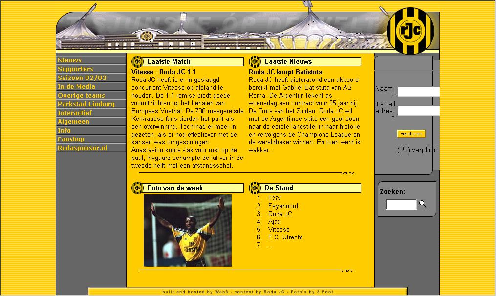

OffOfficiële Roda-site gehacked
Maandagmiddag omstreeks 17.00 uur is de officiële Roda-site gehacked. De site kampte al eerder met problemen en was anderhalve dag niet bereikbaar. Woensdagochtend was de site weer on-line.

© Koempels Pleasure Dome